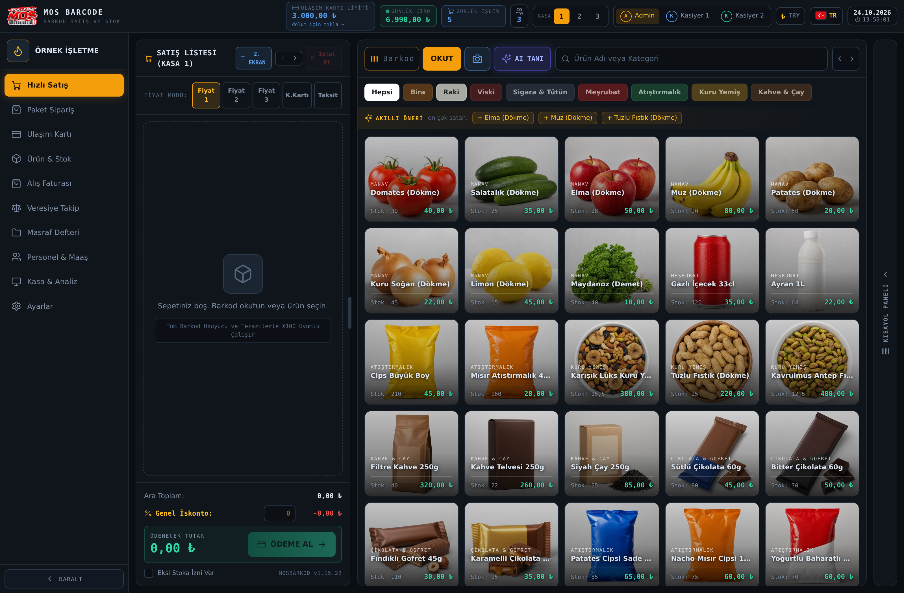
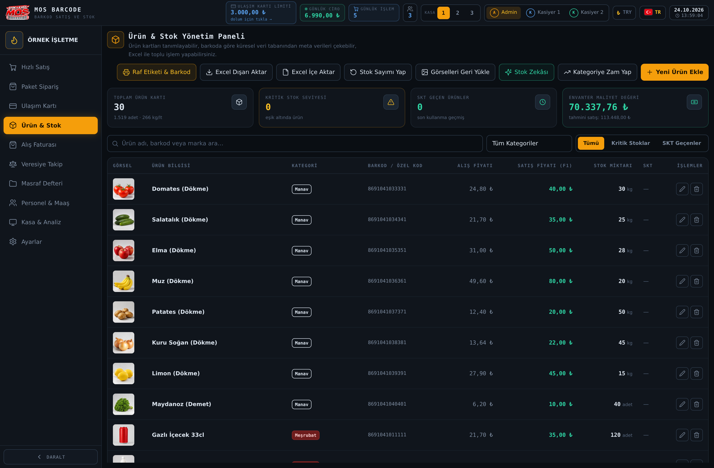
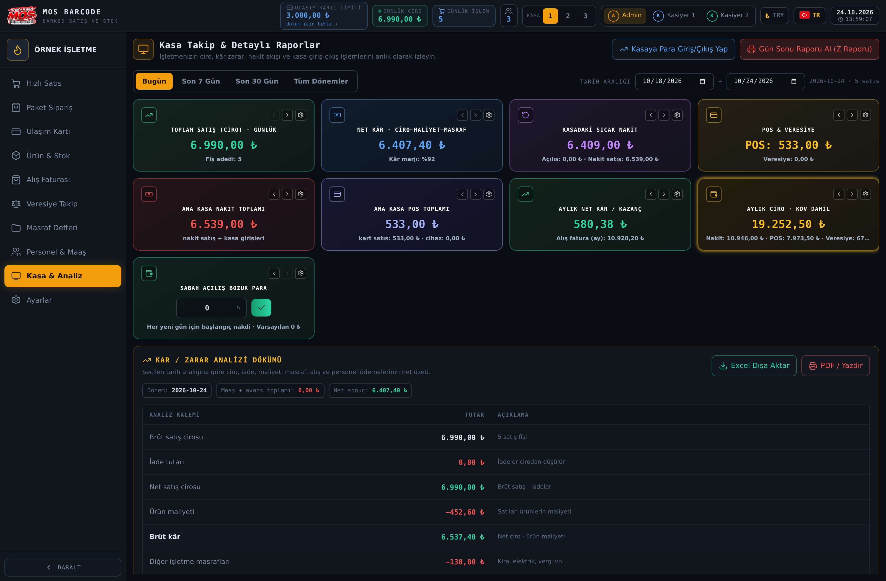
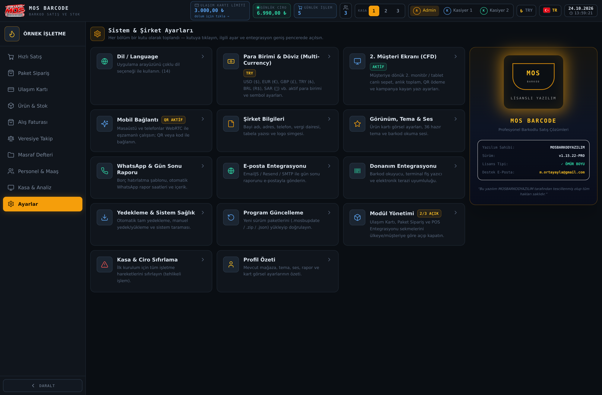

Windows masaüstü yazılımı
Barkodlu satış.
Düzenli stok.
Satış, stok ve işletme kayıtları
tek programda.
● ● ●HIZLI SATIŞ · GERÇEK PROGRAM EKRANI

Ekrandaki ürün ve tutarlar örnek işletme verileridir.
Ömür boyu
kullanımTek seferlik lisans
1 bilgisayar
içinMasaüstü Full Pro
İlk uzaktan
kurulum dahilBaşlangıç desteği
Kasadaki günlük iş akışı
Okutun. Ekleyin.
Satışı kaydedin.
Barkodla ürün bulma, sepet düzenleme
ve farklı ödeme türleri.
Gerçek uygulama ekranı · Örnek işletme verileri
Barkod
ve sepetÜrün, adet ve fiyat
Nakit, kart
ve veresiyeÖdeme kaydı
Fiş ve
satış geçmişiİşlem takibi
Ürünlerinizi tanıyın
Stok ve alışlar
kontrol altında.
Ürün kartları, stok miktarları ve
alış kayıtlarını birlikte yönetin.
● ● ●ÜRÜN & STOK YÖNETİMİ

Gerçek uygulama ekranı · Örnek işletme verileri
Ürün
kartlarıBarkod ve fiyatlar
Stok
sayımıMiktar kontrolü
Excel ile
içe aktarımToplu ürün girişi
İşletmenize genel bakış
Kasa, veresiye
ve raporlar.
Satışları, tahsilatları ve masrafları
kayıtlarınız üzerinden inceleyin.
● ● ●KASA TAKİP & DETAYLI RAPORLAR

Gerçek uygulama ekranı · Tutarlar örnektir; kazanç vaadi değildir.
Satış ve
kasa özetiDönem filtreleri
Veresiye
ve tahsilatMüşteri hesapları
Masraf
kayıtlarıGiderlerin takibi
Başlangıcı birlikte yapalım
İlk kurulumda
yanınızdayız.
İlk uzaktan kurulum dahil.
1 bilgisayarda ömür boyu kullanım.
● ● ●AYARLAR · GERÇEK PROGRAM EKRANI

Uzaktan kurulum için internet ve uygun cihaz gerekir.
14 dilde
arayüzDil seçimi
ZIP yedek
ve geri yüklemeVeri taşıma
İşletmeye
özel ayarlarProfil ve görünüm